Great Wall Motors (GWM)
China's SUV and Pickup Leader
Founded: 1984
Country: China
Icon: Haval H6
SUV Specialist
China's SUV and Pickup Leader
Great Wall Motors (GWM) is one of China's most successful and influential automakers, with a story that begins not in a corporate boardroom, but in a small agricultural vehicle repair workshop. Founded in 1984 and headquartered in Baoding, Hebei Province, GWM has grown into a global automotive powerhouse specializing in SUVs and pickup trucks [citation:1].
The roots of GWM trace back to 1976, when Wei Deliang established an agricultural vehicle workshop in Baoding in collaboration with the local government of Nandayuan Township. By 1984, the workshop began producing its own commercial vehicles, based on the Beijing BJ212, including small trucks called the CC130 and a large SUV, the CC513. The company was renamed Great Wall Industry Company [citation:5].
In 1989, Wei Deliang died in a car accident, and the company reverted to local community ownership. At just 26 years old, Wei Jianjun – the founder's nephew – applied to run the struggling company. In July 1990, he was appointed director. Wei Jianjun taught himself automotive engineering and began developing passenger cars [citation:5].
By 1993, Great Wall was producing several models based on existing designs, including versions of the Nissan Cedric and Toyota Crown. However, new national regulations forced the company to end passenger car production by the end of 1994. Recognizing the potential of pickup trucks, Wei Jianjun developed a model based on the Toyota Hilux [citation:5].
In 1996, Great Wall launched the Great Wall Deer pickup truck, priced competitively and considered of good quality. The Deer's success made Great Wall the leading pickup producer in China. In October 1997, the first Great Wall pickups were exported to the Middle East [citation:5].
In 1998, the local government privatized the company, forming Great Wall Motor Group Co. Ltd., with Wei Jianjun owning 25% of the shares. Great Wall became the first private Chinese auto manufacturer to become a public company, listing on the Hong Kong Stock Exchange in December 2003 [citation:5].
In 2006, GWM introduced the Haval CUV (initially Hover), which was exported to Asian, Russian, and South American markets. In September 2006, 500 units were exported to Italy – the first time a privately-owned Chinese car company exported cars to Europe in large quantities [citation:2][citation:5]. GWM entered the Australian market in 2009 [citation:1].
The Haval H6, launched in 2011, became a phenomenon. It immediately became China's best-selling SUV for eight consecutive years, with over four million H6s produced by the end of 2024 [citation:1][citation:2].
In March 2013, Haval was spun off as a standalone SUV brand – the second brand from GWM. In April 2017, the premium brand Wey was introduced, named after Wei Jianjun's family name. In 2018, GWM created the Ora electric vehicle brand and spun off its battery business into SVOLT Energy Technology [citation:5].
In 2020, GWM purchased General Motors' Thailand plant and officially rebranded to GWM globally. In 2023, GWM restructured its multi-brand strategy for export markets, making Haval, Ora, Tank, and Wey sub-brands under the GWM umbrella [citation:1].
Today, GWM has 10 production facilities across China, Thailand, Brazil, and Russia, with plants assembling vehicles in countries like Pakistan. In 2024, GWM sold 1,233,292 vehicles globally, with the Haval brand selling 706,234 units. In Australia, GWM has become the top-selling Chinese brand, with 42,782 sales in 2024 [citation:1].
"We want to build the best SUVs and pickups in the world."- Wei Jianjun, Chairman
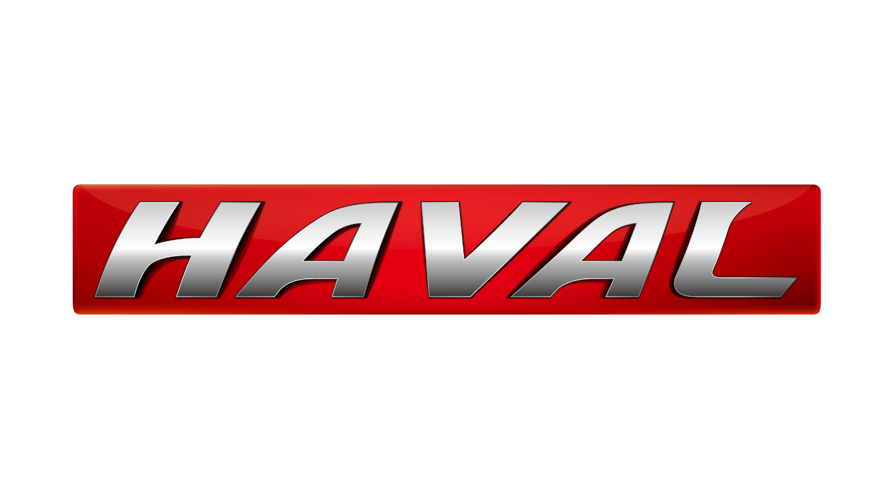
SUV specialist – GWM's core brand
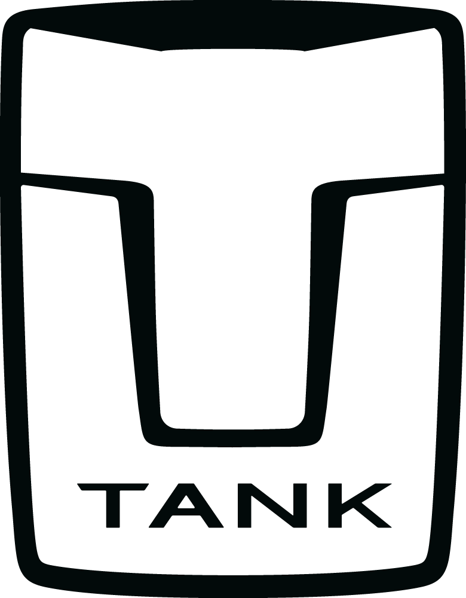
Luxury off-road SUVs
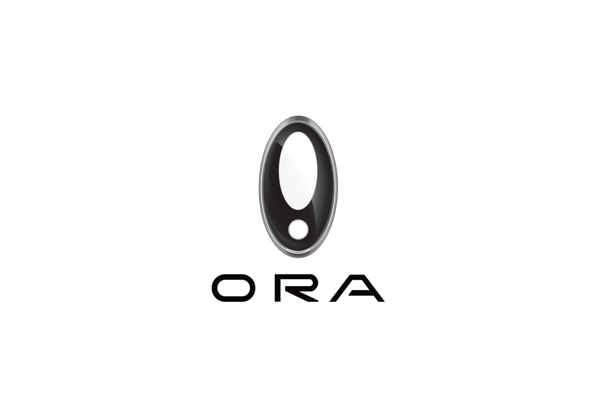
Electric vehicles, retro design
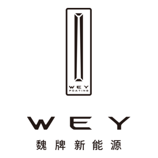
Premium luxury SUVs and MPVs
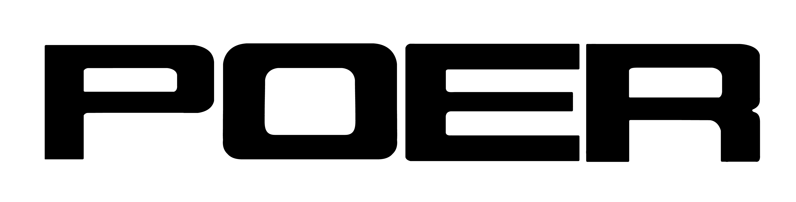
Pickup trucks
In China, these operate as independent brands. In export markets like Australia and UK, they are sold under the GWM umbrella (e.g., GWM Haval H6, GWM Ora 03) [citation:1][citation:8].
Haval is GWM's SUV specialist and the brand's greatest success story. Established as a standalone brand in March 2013, Haval focuses exclusively on SUVs [citation:2].
The Haval name first appeared in 2005 with the Haval CUV (initially Hover). The breakthrough came with the Haval H6 in 2011, which became China's best-selling SUV for eight consecutive years [citation:2].
By 2024, Haval had sold over 700,000 vehicles annually, making it one of China's most successful SUV brands [citation:1].
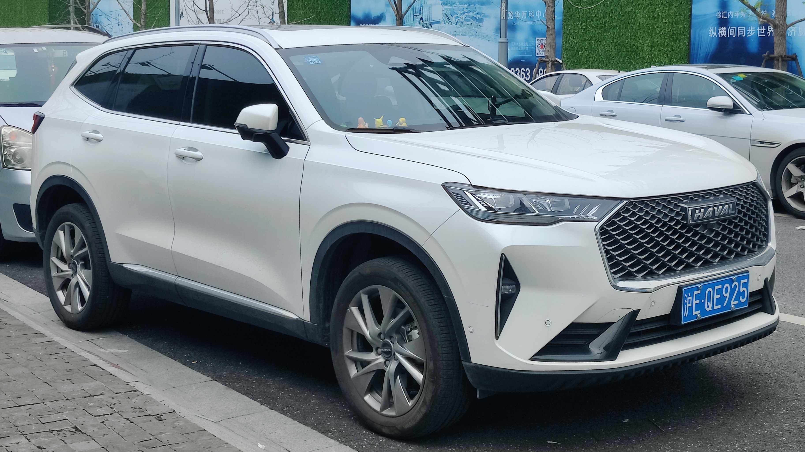
Tank is GWM's luxury off-road SUV brand, launched to cater to the growing demand for premium rugged vehicles. The brand combines serious off-road capability with high-end luxury [citation:1].
The Tank brand has been a massive success, particularly in Australia where the Tank 300 became an instant hit. In February 2026, Tank CEO Gu Yukun announced a "transcendent" new product to further elevate the brand [citation:7].
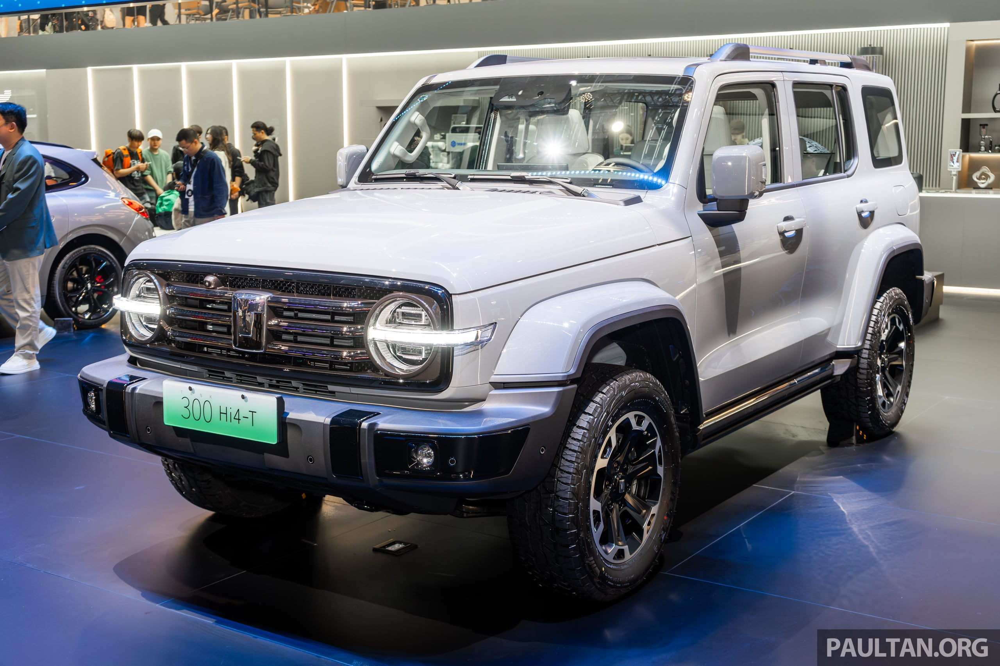
Ora is GWM's electric vehicle brand, launched in 2018. Known for its distinctive retro-futuristic design and cute, approachable styling, Ora has become one of China's most recognizable EV brands [citation:5][citation:8].
Ora models are known for their distinctive "cat" naming convention and charming design. In September 2025, Ora announced its first SUV would be named Ora 5, following a public poll [citation:3].
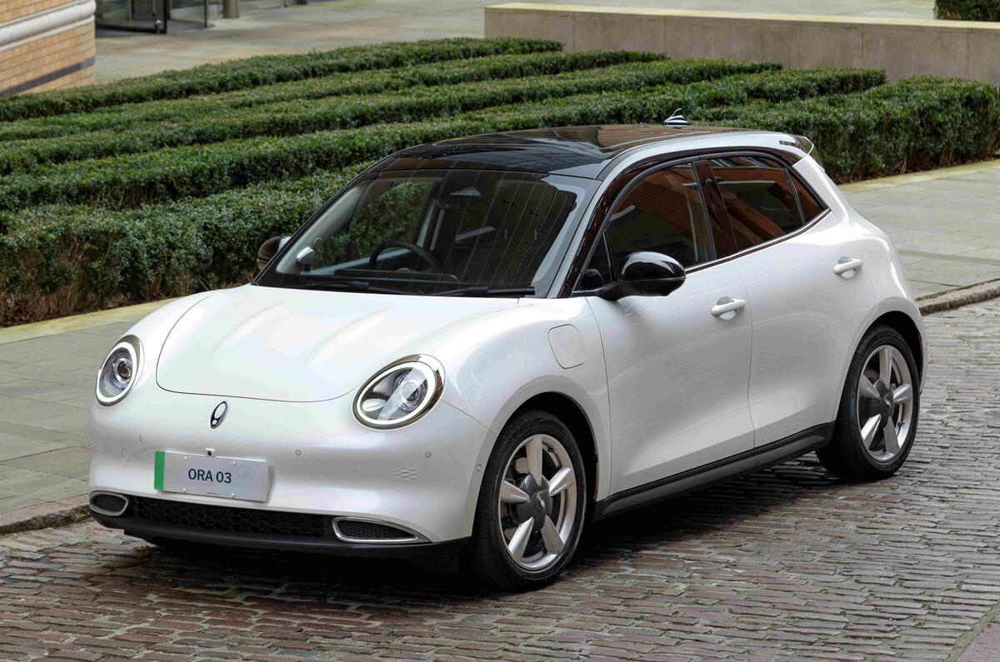
Wey (stylized as WEY) is GWM's premium luxury brand, launched in April 2017. Named after Wei Jianjun's family name, Wey represents GWM's highest level of luxury and technology [citation:4][citation:5].
Wey models are named after coffee varieties in international markets. The brand has seen strong growth, with production reaching nearly 100,000 units in 2025 [citation:4].
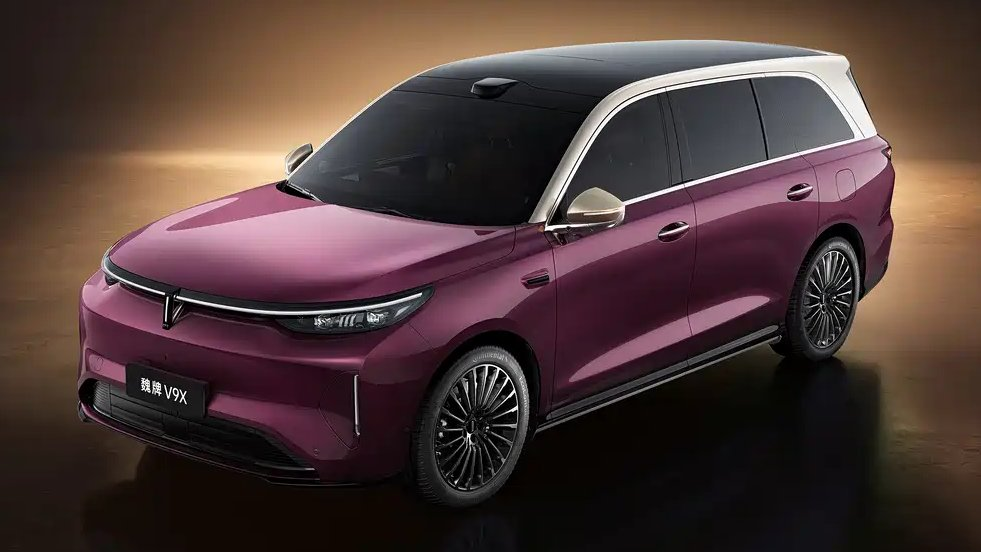
Poer is GWM's pickup truck brand, continuing the legacy that started with the Deer in 1996. GWM has been China's leading pickup manufacturer for decades [citation:1][citation:5].
GWM's pickup range is renowned for durability and value. The Cannon and Cannon Alpha compete directly with Toyota HiLux and Ford Ranger in markets like Australia and South Africa [citation:1][citation:9].
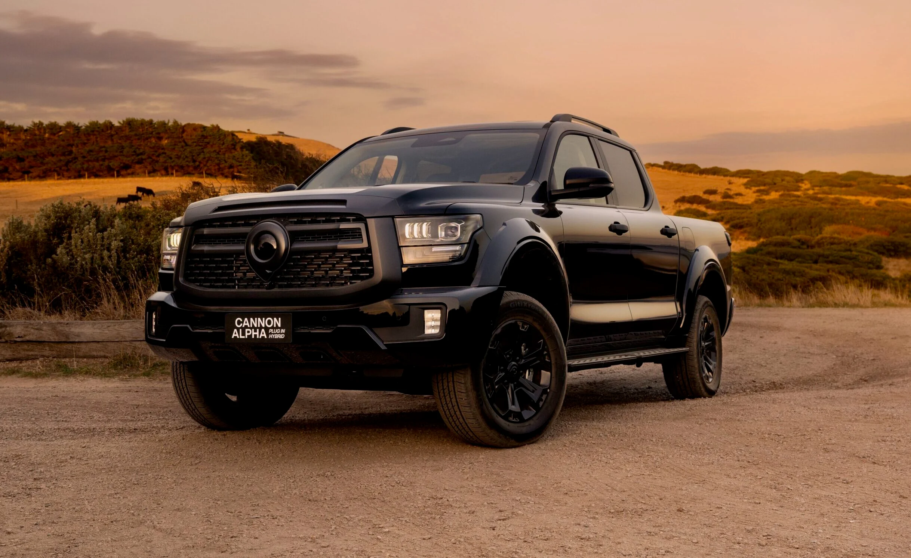
Intelligent 4WD hybrid system combining 1.5L turbo engine with dual electric motors. Used in Tank 500, Wey 80, and other models. Up to 300kW power, 750Nm torque [citation:10].
Advanced driver assistance systems including adaptive cruise, lane centering, traffic jam assist, and autonomous emergency braking. New Wey V9X features AI-powered autonomous driving with blue indicator lights [citation:7].
GWM's battery subsidiary, SVOLT, develops advanced battery cells and packs for EVs and hybrids. Supplies both GWM and other manufacturers [citation:5].
Dedicated Hybrid Transmission with multiple modes for optimal efficiency and performance [citation:10].
Advanced modular platform architecture for SUVs and MPVs. Guiyuan S is the premium sequence for flagship models [citation:7].
R&D centers in China, Germany, Japan, India, and USA, employing thousands of engineers [citation:8].
GWM has established a significant global footprint, becoming one of China's most successful automotive exporters [citation:1][citation:5].
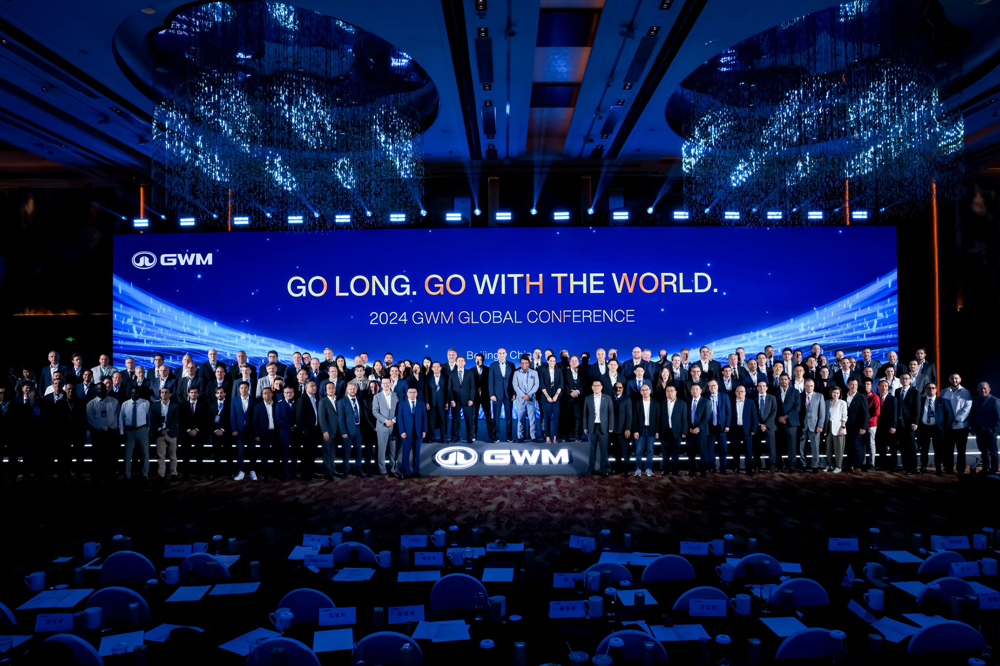
In 2018, GWM signed a landmark joint venture agreement with BMW Group, establishing Spotlight Automotive. This 50:50 joint venture produces electric Mini vehicles in China for the global market [citation:1][citation:5][citation:8].
The partnership validates GWM's manufacturing capabilities and technological expertise. It also provides BMW with access to China's EV supply chain and market [citation:8].
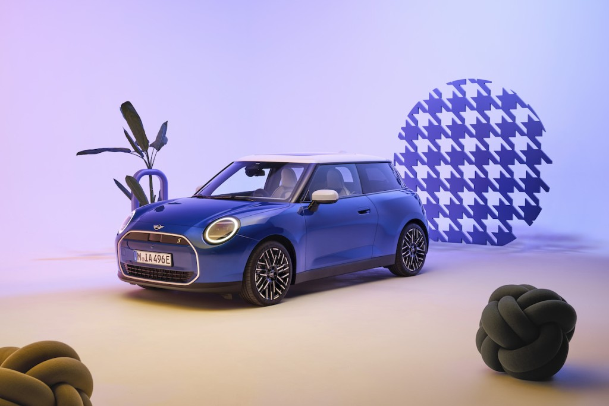